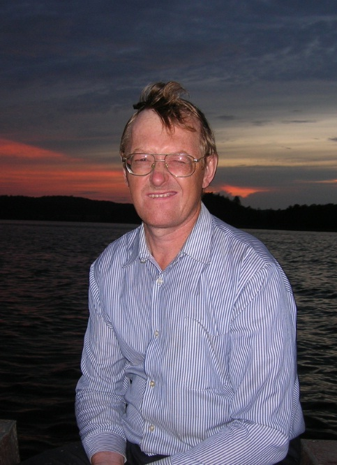

Ну вот всего вокруг понавесил, а теперь собственно содержательная часть отчета о том как я, или как мы, встретили Новый 2011, как я уже многократно говорил всем - замечательный Год (нужно будет еще к Маше в гараж сходить, поздравить и ее с Новым Годом, а то я ее почти неделю не видел, после прошлых с Таней танцев).
Началось все в четверг, у меня на работе все вздохнули облегченно: мы закрыли месяц, распечатали населению извещения-квитанции, все стали спокойно готовить отчеты, а я, пользуясь служебным положением, подготовил список всех родственников, кого нужно поздравить с Новым Годом и каким способом воспользоваться, и стал также спокойно сочинять поздравления (потом жизнь показала, что к обеду пятницы нужно сильно ускориться, так как список родственников сильно не уменьшился по числу отправленных поздравлений).
В общем четверг глобально разбился на три процесса: попытку сочинения текстов поздравлениий, экспериментов с приготовлений натурального прозрачного новогоднего холодца (как потом оказалось, слабосоленого, но красивого и полезного - чеснока я не жалел), и борьбы с "однокласниками.ru". Этот сайт своей медлительностью и, требующему денег, за каждый шаг (век бы им не пользовался) у меня всегда вызывает недовольство. Но что поделать, до Труфаныча в Астане только через него и можно добраться. Но четверг был пройден. У меня вот были вариации, а у Тани железно: вся неделя перед экраном компьютера - безпросветная переработка сведений работодателей в Пенсионный Фонд.
Пятница, тридцать первое, так же разбилась на три части. Первая часть планировалась "на работе до трех без обеда". Но до двенадцать дня я уже в ускоренном режиме отправлял поздравления, отсылал смс-ки (вот тоже ненужное изобретение, пока наберешь смс-ку все пальцы об телефон помнешь, но иногда приходится пользоваться). К обеду я устал работать и все наше предприятие собралось в кабинете директора http://vkontakte.ru/album90606350_124189257 , мы поздравились с праздником, набрались оптимизма на Новый Год, вместе запустили электронную приемную http://flatpay.ru и пошли по домам. Далее началась вторая часть тридцать первого.
Стоп, была еще среда, в среду я понял почему у меня было денег больше, чем в предыдущие месяцы, и я кроме подарков, спокойно купил себе Windows7 (в которой сейчас работаю) и вэб-камеру. В среду вечером я понял, что не заплатил очередной взнос за машину и отпущенное время для этого чуть более суток. Пришлось изымать из банкомата резервный фонд (деньги, которые весной 10 года я начал откладывать на олимпиаду в Сочи). Но, слава богу, перешел в Новый Год без долгов (а на олимпиаду придется начать снова откладывать, но пока что-то расхотелось!).
Возвращаюсь в 31-ое. После обеда плотный график приготовления блюд, успеть до 20.00! Успели! Из сделанного избранное: утка, фаршированная черносливом, изюмом и яблоками http://margo-klaipeda.livejournal.com/57461.html; селедка по "пушистой" шубой http://www.passion.ru/ny.php/vr/1935/; "оливье" - много кругом говорили, что готовить не стал; салат "Новогодний" http://cookingclub.ru/recipes/lcomm/8074/0/print; салат из зеленого горошка с морковью (но со сметаной, майонеза и так уже много) http://www.russianfood.com/recipes/recipe.php?rid=86579.
С восьми до десяти дома проводы Старого года, а после этого в гости, не знаю, как сказать куда, чтобы не нарушить естественное развитие событий ... В общем, пошли знакомиться к знакомым, которые уже были Ксюше более знакомы, а нам с Таней очень немного знакомые и то давно, лет двадцать назад. Новый Год в новой компании провели очень хорошо и интересно! Довольные и засыпающие вернулись домой в пятом часу.
Первое число разбилось на две части: первую часть отсыпались, а вторую часть отмечали Тане день рождения в теплой и благостной обстановке, до тех пор, пока уже не захотелось спать снова. В итоге получился замечательный праздник. Сохраним это впечатление на весь год!
А теперь заканчиваю основную часть отчета, быстро перешедшую в заключение, так как обед уже прошел, а я еще сижу над текстом. Хватит (нужно уложиться в график), делаю перекур, отвлекусь, потом начну верстать отчет для просмотрщика (ориентируюсь, что у вас, дорогие мои читатели, либо IE, либо мозилла, либо опера; а других браузеров я пока и не знаю, а на этих проверю). А пока, говорю пока всем с наилучшими пожеланиями!